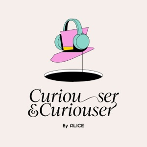

Product security builder with director-level scope, scaling security functions at a fast-growing company and writing their first playbooks, processes and governance. Hands-on across application and AI security, with experience standing up programs, cross-functional reviews and enterprise trust. Contributes to the field beyond the day job, through industry standards work, published research, open-source tooling and conference speaking.
Technical authority for an AI security platform, across research, product and customers.
AITechnical evangelist for Alice's AI security platform: explain model behavior, risk frameworks and product capabilities to enterprise customers, partners and executives.
AIPGBuilt the research-to-publication pipeline that turns Alice's security research into published work.
PSAITETurn customer feedback and field observations into working prototypes that product leadership uses to prioritize features.
AIPSTEBuilt Caterpillar, an open-source scanner that audits AI agent skills for malicious behavior before install, with LLM-as-a-judge or rule-based modes, offline support and CI/CD gating.
AITECaterpillar also covers MCP tool configurations, with A–F grading.
AITEBuilt internal automation tooling (n8n workflows, persona-based feedback mechanisms) adopted by Marketing and Product to put AI capabilities to work.
PSAICo-lead a small cross-functional working group that moves from raw signal (customer calls, demos, market feedback) to functional builds in tight cycles.
AIRepresent technical direction on conference panels covering guardrails, content filtering and agentic system design.
Jun 2024 – May 2025
Executive strategy seat spanning AI, Security, Legal, Policy and Engine.
PGAIEstablished and chaired a companywide AI Review Board, reviewing 80+ internal AI initiatives in the first year against a risk framework covering cost, ethics, performance, infrastructure and age-appropriate user safety.
PGTEImplemented automated intake and triage across information security, data privacy, patent review and IP.
AIPSEvaluated third-party AI integrations and open-source models against internal security standards and regulatory requirements, with legal and compliance.
PGServed as the Chief Scientist's proxy in executive meetings and author of executive communications, connecting research direction to engineering execution.
PGBuilt a companywide patent and IP program: an automated invention-disclosure system, a monthly patent showcase, and a career framework tying patent creation to technical-leadership progression at Director+ levels.
PGCreated a research job classification with VPs and recruiting to attract academic talent, and a researcher-management system automating intake, access provisioning and off-boarding.
PGLed program direction for a Lua-native web layer replacing Chromium implementations, and set up a device-performance and OOM metrics framework with data science.
Sep 2019 – Jun 2024
Early security hire during the company's growth toward its direct listing.
Helped build the AppSec practice from the ground up as security grew from 7 to 90.
PSASPGHelped build the application-security practice from the ground up, writing its first playbooks and processes: CI/CD integration, code review and architecture assessments.
PSIRLed and supported incident response, building the IR process and leading live incidents across account takeover and session management, insider threat (vendor and employee), and anomalous transactions and fraud.
PSASPGTook over the bug-bounty / vulnerability-disclosure program in 2020: response rate from ~60% to 90%, average time to close from over a month to ~2 weeks.
PGLed early compliance and regulatory conversations ahead of the direct listing, translating requirements into engineering guidance.
PSASTERe-architected RBAC for the trust & safety platform with its engineering team, rationalizing 400+ role IDs across a 5,000+ person outsourced workforce toward least privilege.
PSASThreat modeling and architecture reviews for high-impact systems, including the voice-chat system, region-specific apps for China and Vietnam, an authentication refactor supporting console quick-login and LMS SSO, and a platform-wide safety-system redesign across 30+ components and 7 engineering teams.
AIPSPGRan security program management for AI features across 4 teams (15 major features): reviews, testing and mitigation.
PSASTEBuilt parts of and maintained the internal ProdSec scanning platform.
PSASPGTESet up the open-source security process: automated review for internal projects up for release, a governance framework with Engineering Efficiency, supplemental dependency scanning, and GitHub workflow automation for release compliance.
PSASPGBuilt a security partnership program that made AppSec the front door for engineering; the function grew from 3 to 12 engineers.
PGInterviewed across InfoSec through its first ~40 hires, then was first point of contact for onboarding and mentoring new security hires as the org grew from 7 to 90.
PSPGRan "Trust by Design" as the InfoSec representative: 120+ high-level compliance and safety reviews.
PSASThreat modeled certificate pinning for education products.
PSASSecurity design for the voice-chat system covered both voice-safety features and law-enforcement access requirements.
PSIRIncident response also covered niche gaming-specific abuse.
PSASDrove DevSecOps adoption.
Nov 2018 – Aug 2019
Secured Bosch's AI research and enablement environment.
PSPGLed ISO 27001 compliance initiatives for the AI research and enablement environment.
PSAIThreat-modeled autonomous-driving systems and their software supply chain.
PSTEBuilt Kubernetes security policies and RBAC for a GPU cluster.
AITEBuilt an early ML-for-SOC threat-detection capability with the SOC team.
PSPGTEBuilt a data-integrity verification system for international ML manufacturing under strict regional data regulation.
Apr 2018 – Oct 2018
Restructured security assessment around risk-based architecture review.
PSASPGRestructured the security-assessment program around risk-based architecture reviews and improved third-party risk review.
PGStrengthened security training delivery and mentored junior engineers.
Sep 2016 – Mar 2018
Security testing across broadcast and on-air systems.
PSASPGLed security testing across broadcast and on-air systems, including a PCI compliance program.
PSASBuilt a mobile application review program from the ground up.
PSASTEDeveloped custom scanning tooling that improved remediation tracking.
2015 – 2016
Application security assessments and developer training.
PSASOWASP Top 10 vulnerability assessments, remediation guidance and developer security training.
ASCreated consultant training on vulnerability discovery, exploitation and mitigation.
Podcast

Curiouser & Curiouser, host. Alice's AI-security podcast: CISOs, researchers and builders on what AI actually changes for security. 14 episodes.